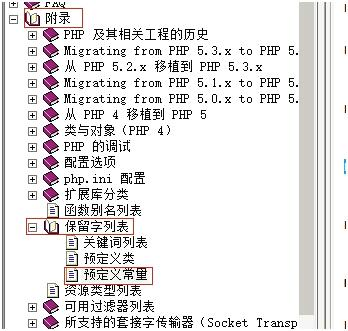
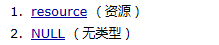
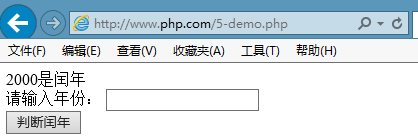
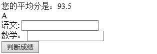

1 今日目标
理解常量的概念
掌握常量的使用方式
理解魔术常量的概念和应用
理解string类型中单引号和双引号的区别
掌握PHP中数组的访问方式；
理解PHP代码的执行解析过程；
掌握逻辑运算符的使用；
理解短路运算的原理；
掌握自操作运算符的使用；
理解前置和后置自操作符的区别和原理；
了解强制转换的价值和应用场景；
理解if分支结构的应用场景；
理解switch分支结构的应用场景；
理解switch和if分支的区别；
2 常量 在整个运行过程中，固定不变的值
定义常量 1、用define()函数定义常量
1 2 3 4 define(常量名，值，[是否区别大小写]) true表示不区分大小写，默认是false 常量名前没有$符 常量名推荐使用大写
例题：
1 2 3 4 5 <?php define('NAME' ,'tom' ); define('PI' ,3.14 ,true ); echo NAME,'<br>' ,Pi;
2、定义常量可以用特殊字符，但是在调用的时候必须用constant关键字调用
1 2 define('%-%' ,'tom' ); echo constant('%-%' );
3、判断常量是否定义，通过defined()判断常量是否已经定义
1 2 3 4 if (!defined('NAME' )){ define('NAME' ,'berry' ); } echo NAME;
4、还可以使用const关键字定义常量
1 2 const NAME='tom' ;echo NAME;
小结：
1、定义常量有两种方式，define()和const
2、常量在整个运行过程中值保持不变，常量不能重新定义
3、使用constant获取特殊字符做的常量名的值
4、defined()用来判断常量是否被定义
预定义常量 PHP预先定义好的常量

例题
1 2 3 echo PHP_VERSION,'<br>' ; echo PHP_OS,'<br>' ; echo PHP_INT_MAX,'<br>' ;
魔术常量 魔术常量它们的值随着它们在代码中的位置改变而改变
1 2 3 echo __LINE__ ,'<br>' ; echo __FILE__ ,'<br>' ; echo __DIR__ ,'<br>' ;
3 数据类型 数据类型有两种：强类型和弱类型
PHP是弱类型
基本类型（标量类型） 1、整型
存整数，PHP_INT_MAX获取整形最大值
PHP支持8、10、16机制的整数
1 2 3 4 5 6 7 8 <?php $num1 =10 ; $num2 =010 ; $num3 =0x10 ; echo $num1 ,'<br>' ; echo $num2 ,'<br>' ; echo $num3 ;
进制转换
机制
缩写
单词
十进制
dec
decimalist
二进制
bin
binary
八进制
oct
octonary
十六进制
hex
hexdecimalist
例题
PHP提供了进制转换函数
1 2 3 4 5 echo decbin(123 ),'<br>' ; echo bindec(1111011 ),'<br>' ; echo dechex(123 ),'<br>' ; echo hexdec('7b' ),'<br>' ; echo decoct(123 );
2、浮点型
浮点数在内存中保存的是近似值
浮点数不能参与比较
1 2 3 var_dump(0.9 ==(1 -0.1 )); echo '<br>' ;var_dump(0.1 ==(1 -0.9 ));
如果浮点数要比较，必须确定比较的位数
1 2 3 4 5 var_dump(0.9 ==(1 -0.1 )); echo '<br>' ;var_dump(0.1 ==(1 -0.9 )); echo '<br>' ;var_dump(bccomp(0.1 ,1 -0.9 ,5 ));
提醒：如果一个整数超出了整形的范围，会自动的转成浮点型
3、布尔型
不能使用echo 和print输出布尔型，要使用var_dump()输出
1 2 $flag =false ;var_dump($flag );
4、字符串型
在PHP中单引号字符串和双引号字符串是有区别的
单引号字符串是真正的字符串
双引号字符串要解析字符串中的变量
例题
1 2 3 $name ='tom' ;echo '我的名字叫$name' ,'<br>' ; echo "我的名字叫$name " ,'<br>' ;
例题：{ }取变量值
1 2 3 4 $name ='tom' ;echo '$name是我的名字' ,'<br>' ; echo "{$name} 是我的名字" ,'<br>' ; echo "${name}是我的名字" ,'<br>' ;
输出特殊字符
1 2 echo '毛主席说：\'上课不要睡觉\'' ,'<br>' ; echo '文件保存在c:\\' ;
字符串定界符
1 2 3 1、有<<<开头，后面跟的是标识符 2、字符串定界符的结束符必须顶格写，前面不能有任何的空白字符 3、字符串定界符分为两种，heredoc（双引号），nowdoc（单引号）
复合类型 1、数组
在PHP中数组有两种形式，索引数组和关联数组
索引数组：用整数做下标，默认从0开始，后面依次加一
关联数组：用字符串做下标，通过=>符号将下标和值关联起来
例题：数组的声明
1 2 3 4 5 6 7 8 9 10 11 12 13 14 15 16 <?php $stu =array ('tom' ,'berry' ,'ketty' ); print_r($stu ); echo '<hr>' ;echo $stu [0 ],'<br>' ; echo $stu [1 ],'<br>' ; echo $stu [2 ],'<hr>' ; ------------------------------------------ $emp =array ('name' =>'李白' ,'sex' =>'男' ,'age' =>22 );print_r($emp ); echo '<hr>' ;echo $emp ['name' ],'<br>' ; echo $emp ['sex' ],'<br>' ; echo $emp ['age' ];
练习：写出数组的下标
1 2 3 4 5 6 7 8 9 10 11 12 13 14 $array =array (1 =>'a' ,'b' ,'c' ,'d' );print_r($array ); echo '<br>' ;-------------------------- $array =array ('a' ,2 =>'b' ,'c' ,5 =>'d' );print_r($array ); echo '<br>' ;---------------------------- $array =array ('a' ,'name' =>'b' ,'c' ,'sex' =>'d' );print_r($array ); echo '<br>' ;------------------------------ $array =array (1 =>'a' ,1 =>'b' ,1 =>'c' ,'d' );print_r($array );
数组的下标只能是正整数和字符串
思考如下下标
1 2 3 4 5 6 7 8 9 $stu [true ]='tom' ; $stu [false ]='berry' ; $stu [12.9 ]='aa' ; $stu [-10 ]='bb' ; $stu [-12.3 ]='cc' ; $stu ['10' ]='dd' ; $stu ['' ]='ee' ; $stu [null ]='ff' ; print_r($stu );
短数组语法，可以直接通过中括号声明数组
1 2 $stu =['tom' ,'berry' ,'ketty' ];print_r($stu );
多学一招：在PHP7.1中可以支持数组的赋值
1 2 3 4 5 $num1 =10 ;$num2 =20 ;[$num1 ,$num2 ]=[$num2 ,$num1 ]; echo $num1 ,'<br>' ,$num2 ;
二维数组的声明
1 2 3 4 5 6 7 8 9 10 11 12 13 14 15 16 17 18 19 20 21 22 23 24 $stu =[ ['name' =>'tom' ,'sex' =>'男' ,'age' =>22 ], ['name' =>'berry' ,'sex' =>'女' ,'age' =>23 ] ]; echo '<pre>' ;print_r($stu ); Array ( [0 ] => Array ( [name] => tom [sex] => 男 [age] => 22 ) [1 ] => Array ( [name] => berry [sex] => 女 [age] => 23 ) )
多学一招：字符串可以通过数组的方式去调用
1 2 echo 'abc' [0 ],'<br>' ; echo 'abc' [-1 ],'<br>' ;
小结：
1、数组在内存中一段连续的空间
2、如果要保存同一类型的多个数据就使用数组
2、对象
对象在后面专门讲解（面向对象编程）
特殊类型 1、资源
2、null

提醒：在PHP中 null和NULL是一样的，不区分大小写
类型转换 1、自动类型转换：当提供的类型和需要的类型不一致的时候会自动进行类型转换
1 2 3 4 5 6 7 8 $num =10 ;if ($num ){ echo 'aa' ; }else { echo 'bb' ; } --------------------------------- echo '20' -10 ;
2、强制类型转换
语法：（数据类型）数据
1 2 3 <?php $num1 ='12' ;var_dump($num1 ,(int )$num1 ,(float )$num1 );
其他类型和布尔之间的转换
规则：0、空为假，非0非空为真
1 2 3 4 5 6 7 8 9 10 11 12 13 14 15 16 <?php var_dump((bool )'abc' ); echo '<br>' ; var_dump((bool )'' ); echo '<br>' ; var_dump((bool )'0' ); echo '<br>' ; var_dump((bool )'0.0' ); echo '<br>' ; var_dump((bool )'00' ); echo '<br>' ; var_dump((bool )'false' ); echo '<br>' ; var_dump((bool )'null' ); echo '<br>' ; var_dump((bool )1 ); echo '<br>' ; var_dump((bool )0 ); echo '<br>' ; var_dump((bool )-10 ); echo '<br>' ; var_dump((bool )0.0 ); echo '<br>' ; var_dump((bool )array ()); echo '<br>' ; var_dump((bool )array (1 )); echo '<br>' ; var_dump((bool )array (false )); echo '<br>' ; var_dump((bool )null ); echo '<br>' ;
4 运算符 算术运算符
一元运算符
二元运算符
++
+
–
-
*
/
% (取模)
注意：在PHP中，算术运算符只能做数学运算。
1 2 3 4 <?php echo '10' +'20' ,'<br>' ; echo '10ab' +'20cd' ,'<br>' ; echo 'ab10' +'cd20' ,'<br>' ;
++前置：先自增再运算
++后置：先运算再自增
练习
1 2 3 4 5 6 7 8 9 $num =10 ;$num ++;echo $num ; ------------------------- $num =10 ;echo $num ++; ------------------------ $num =10 ;echo ++$num ;
练习
1 2 3 4 5 6 7 <?php $num =5 ;echo (++$num )+(++$num )+(++$num ); ------------------------- <?php $num =5 ;echo ($num ++)+($num ++)+($num ++);
关系运算符（比较运算符） 比较运算符的运算结果是布尔值
逻辑运算符 1 2 3 4 5 6 & 与：运算符两边的表达式都要计算 | 或：运算符两边的表达式都要计算 && 短路与：如果前面的条件不满足，后面的条件就不用计算了 || 短路或 ! 非
例题
1 2 3 4 5 6 7 8 9 10 11 12 13 14 15 16 <?php $a =5 ;$b =10 ;if ($a >10 && ++$a >20 ) echo '你好吗' ; echo $a ; ---------------------------- <?php $a =5 ;$b =10 ;if ($a <10 || ++$a >20 ) echo '你好吗' ; echo $a ;
赋值运算符 字符串连接符(.) 错误抑制符(@) 错误抑制符只对表达式有效
三元运算符(?:) 语法：
1 2 表达式?值1：值2 //表达式的值为true，返回值1，否则返回值2
练习
1 2 3 <?php $num =11 ;echo $num %2 ?'奇数' :'偶数' ;
null合并运算符(??) PHP7.0以后才支持
例题
1 2 <?php echo $name ??'姓名不详' ;
多学一招：两个用来判断的函数
1 2 isset()：判断变量是否被设置，并且设置的不是null empty()：检查一个变量是否为空，能转成false全部是空，['',0,0.0,array(),null]
例题
1 2 3 4 5 echo isset ($name )?$name :'姓名不详' ; echo '<hr>' ;$stu =array ();echo empty ($stu )?'空' :'非空' ;
5 判断 语法 单分支
双分支
多分支
1 2 3 4 5 6 7 if (条件){ }elseif (条件){ }else { }
多路选择
1 2 3 4 5 6 7 8 9 10 switch (表达式){ case 常量： break ; case 常量： break ; default : }
例题 例题一、判断闰年（练习双分支）
步骤：
1 2 3 1、创建表单 2、提交数据 3、在服务器获取提交的数据，并判断
代码实现
1 2 3 4 5 6 7 8 9 10 11 12 13 14 15 16 17 18 19 20 21 22 23 24 25 26 27 28 29 30 31 32 33 <body> <?php if(!empty($_POST)){ //$_POST不为空说明有post提交的数据 //var_dump($_POST); $year=$_POST['year']; //获取年份 if($year==''){ echo '您没有输入年份'; }else{ if(is_numeric($year)){ //判断$year是否是数字或字符串数字 $year+=0; //将字符串数字转成数字型 if(is_int($year)){ //is_int用来检测变量是否是整型 if($year<1){ echo '年份必须正整数'; }else{ if($year%4==0 && $year%100!=0 || $year%400==0) echo "{$year}是闰年"; else echo "{$year}是平年"; } }else{ echo '您输入的不是整数'; } }else{ echo '您输入的不是数字'; } } } ?> <form method="post" action=""> 请输入年份： <input type="text" name="year"> <br /> <input type="submit" name="button" value="判断闰年"> </form> </body>
运行结果

小结：
1、$_POST是一个变量，用来保存post提交的数据
2、action=’’表示将数据提到本页面
3、is_numeric()判断变量是否是数字或字符串数字
4、is_int()判断变量是否是整型
5、if、else后面如果只是一句代码，大括号可以省略
例题二：判断成绩(练习多分支)
目标：输入语文和数学，判断等级
代码实现
1 2 3 4 5 6 7 8 9 10 11 12 13 14 15 16 17 18 19 20 21 22 23 24 25 26 27 28 29 30 31 32 <body> <?php if(isset($_POST['button'])){ //点击了提交按钮 $ch=$_POST['ch']; //获取语文成绩 $math=$_POST['math']; //获取数学成绩 if($ch=='' || !is_numeric($ch) || $ch<0 || $ch>100){ echo '语文成绩必须在0-100之间'; } elseif($math=='' || !is_numeric($math) || !($math>=0 && $math<=100)){ echo '数学成绩必须在0-100之间'; }else{ $avg=($ch+$math)/2; //求平均值 echo "您的平均分是：{$avg}<br>"; if($avg>=90) echo 'A'; elseif($avg>=80) echo 'B'; elseif($avg>=70) echo 'C'; elseif($avg>=60) echo 'D'; else echo 'E'; } } ?> <form method="post" action=""> 语文: <input type="text" name="ch"> <br /> 数学： <input type="text" name="math"> <br /> <input type="submit" name="button" value="判断成绩"> </form> </body>
运行结果

例题三：更改颜色(switch-case)
目标：将文字的颜色改成选择的颜色
1 2 3 4 5 6 7 8 9 10 11 12 13 14 15 16 17 18 19 20 21 22 23 24 25 26 27 28 29 30 31 32 33 34 35 36 37 38 39 40 41 42 43 44 45 <body> <?php if(isset($_POST['button'])) { switch($_POST['color']){ case '1': $color='#FF0000'; //红色 break; case '2': $color='#009900'; // 绿色 break; case '3': $color='#0000FF'; //蓝色 break; default: $color='#000000'; //黑色 } echo <<<str <script type="text/javascript"> window.onload=function(){ document.getElementById('shi').style.color='$color'; } </script> str; } ?> <div id="shi"> 锄禾日当午， <br /> 汗滴禾下土。 <br /> 谁知盘中餐， <br /> 粒粒皆辛苦。 <br /> </div> <form method="post" action=""> <select name="color"> <option value="0">请选择颜色</option> <option value="1">红色</option> <option value="2">绿色</option> <option value="3">蓝色</option> </select> <input type="submit" name="button" value="更改颜色"> </form> </body>
运行结果
6 作业 计算器